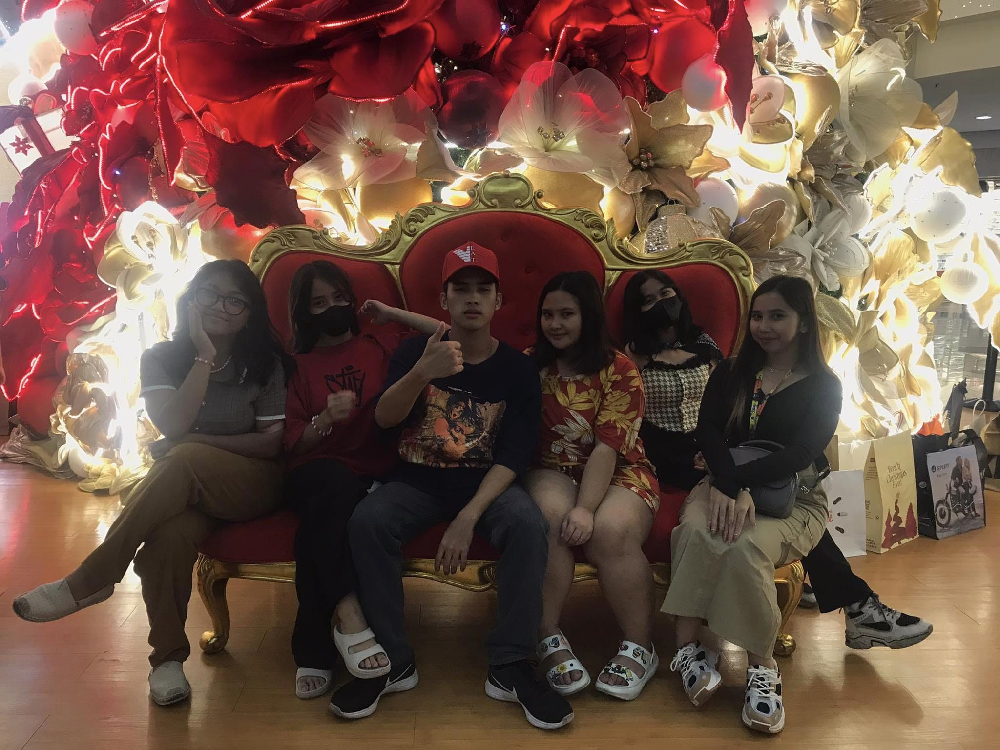
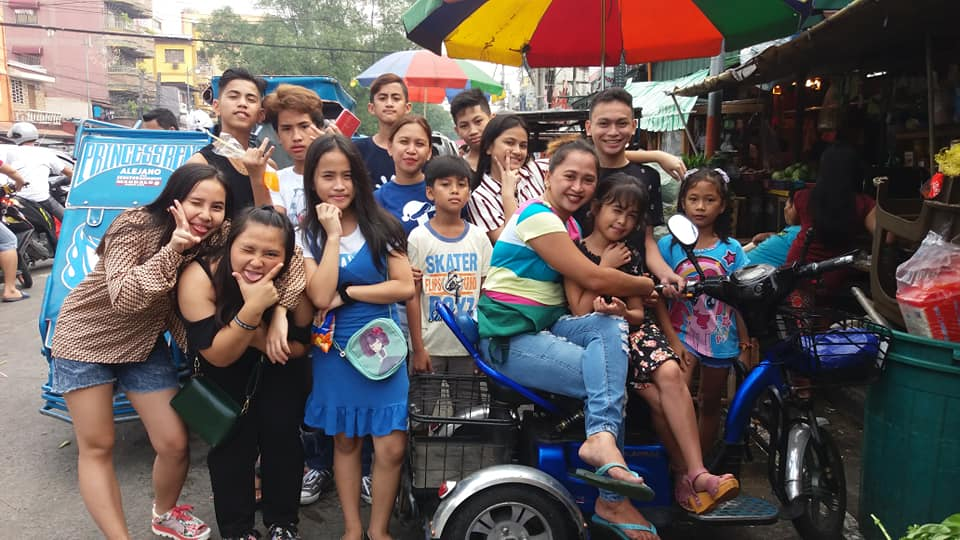
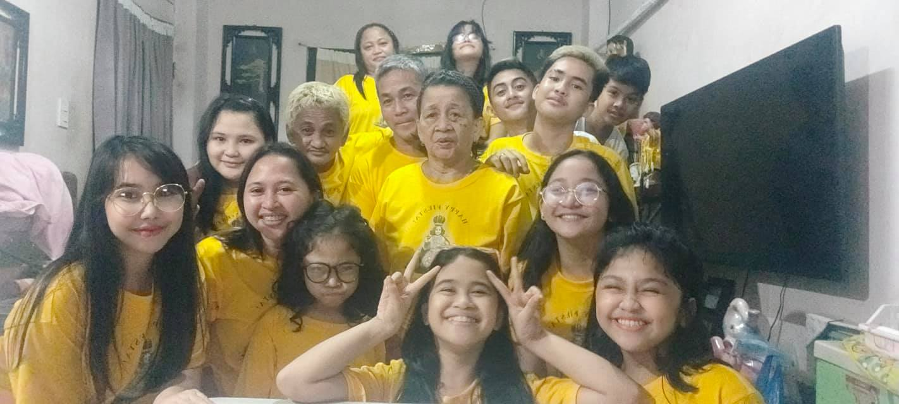

Having a sibling is like having a built-in best friend. Through all the ups and downs, they are the ones who understand our history and share our memories. No matter where life takes us, the bond we share is an enduring thread that ties us together.
My Family


The bond of family is one of the most profound relationships we experience in life. It’s a connection that supports us through trials and triumphs, celebrates our achievements, and comforts us in times of sorrow. Family teaches us the true meaning of unconditional love, patience, and forgiveness, shaping who we are and providing a foundation for who we become.

Family is like music, some high notes, some low notes, but always a beautiful song. In the symphony of life, family provides the melody that guides us through the highs and lows, offering comfort and joy. No matter the dissonance or harmony, the song of family is an enduring and cherished composition, one that resonates deeply within our hearts.